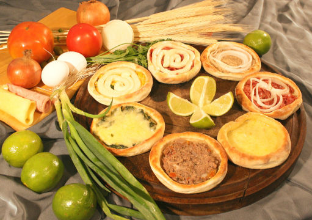

Esfiha Made With Cheese
This is an originally middle eastern dish that was adapted to be made with an open dough instead of the traditional closed dough, giving it the aspect of a mini pizza. It is a delicious dish and can be accompanied with a few slices of lemon to give it extra flavor.
Ingredients
Dough
- 500g of wheat flour
- 250ml of warm water
- 20ml of cooking oil or olive oil
- 10g of dry organic ferment
- 2 soup spoons of sugar
- corn meal for sprinkling
Filling
- 300g of white cheese
- 3 soup spoons of heavy cream
- 3 soup spoons of chopped chives
- 1/2 tea spoon of baking powder
- salt(optional)
Steps
- Dissolve the dry yeast and the sugar in the water and let it be for 5 minutes. Then add the oil and mix it. Now, in a separate bowl, put the flour and salt
- Mix the liquids in the flour bowl e mix it with a wooden spoon first, then with your hands when it becomes a bit dry. Do it until it becomes a smooth ball of dough. Now cover the bowl with a cloth to let it grow to double it's size
- Take the dough from the bowl and put it in a flat surface so you can knead it a little bit to remove the air from it. Now let it rest for 10-15 minutes while you make the filling.
- For the filling. Cut the cheese in small cubes and knead it with your hands. Now add the rest of the filling ingredients and mix everything up until you have a consistent cream.
- Start preheating the oven in 180ºC while you do the dough disks. Take a portion of the dough and shape it to a small ball. Now Open the dough on a kitchen table with the corn meal sprinkled over it, remember to give the small ball, some edges like pizza toppings or a circular pie and add a small portion of the filling to the disk. Put the dough disk in a baking tray and repeat the process until there are no more space in the tray or there are no more dough to work on
- Now just put the esfiha disks with the filling in the oven and leave it there until browning. Remove the esfihas from the oven and you are ready to eat them. Remember to repeat this and the previous steps if there are any dough and filling left.